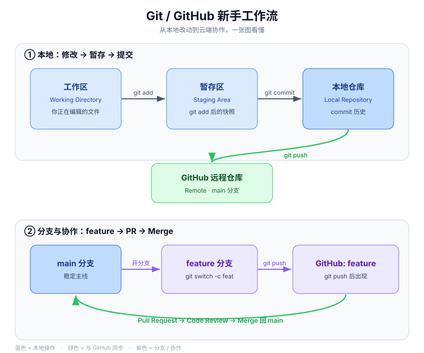

Git / GitHub Beginner's Guide
A hands-on, illustrated Git & GitHub tutorial for complete beginners.
Follow along and in 30 minutes you'll go through: create repo → commit → push → branch → Pull Request → resolve conflicts → automation.

What is this
This is a Git / GitHub beginner tutorial written with real commit history. It's not just explaining concepts — the repository itself is a living example:
- Every file you see here was produced by a real
commit/branch/Pull Request/ conflict resolution; - It ships a GitHub Actions workflow that actually runs (the green check on the top-right shows its status);
- You can
forkit and practice along.
Who it's for: people who have never used Git/GitHub, or who only know the git add . && git commit && git push combo and want to truly understand it.
Git vs GitHub
The two concepts beginners confuse most:
- Git: a version control tool installed on your computer. It records every change to your files (works locally).
- GitHub: a platform that hosts those Git records in the cloud, used for backup, showcasing, and collaboration.
In one sentence: Git manages versions, GitHub manages the cloud and collaboration. This repo lives on GitHub, and its history is recorded by Git.
Workflow at a glance
Keep this picture in mind; every command below just fills in its details:

- Blue (local): you use
git add/git commiton your machine to save changes step by step into your local repo; - Green (sync):
git pushsends your local repo to GitHub, thenpullbrings the latest back; - Purple (collaboration): open a
featurebranch to work, push it, open a Pull Request, and Merge back intomainafter review.
Install & configure
- Install Git from https://git-scm.com (default options are fine).
- Configure your identity (used to sign your commits; do it once):
git config --global user.name "Your Name"
git config --global user.email "you@example.com"
- Authentication (pick one, SSH recommended):
- SSH (recommended):
ssh-keygen -t ed25519 -C "you@example.com", then add the public key to GitHub → Settings → SSH and GPG keys. - HTTPS + token: use a Personal Access Token instead of your password when pushing (never your login password).
The fast path: first commit & push
# 1. Initialize a repo in your local project folder
git init
# 2. Stage your changes
git add README.md
# 3. Commit a snapshot
git commit -m "first commit"
# 4. Rename the default branch to the GitHub-standard main
git branch -M main
# 5. Link the remote repo (use your own URL)
git remote add origin https://github.com/username/repo.git
# 6. Push to GitHub
git push -u origin main
Once done, open your GitHub repo page and you'll see README.md is now in the cloud.
Daily workflow
The four commands you'll use most — just remember this loop:
git status # see what has changed
git add . # stage changes
git commit -m "message" # commit; message should say what & why
git push # push to GitHub
A few handy extras:
git diff # see unstaged change details
git log --oneline # view commit history (one line each)
git pull # fetch the latest remote changes; pull before push is a good habit
Tip for good commit messages: start with an imperative verb, e.g. fix: fix login failure, feat: add export button.
Branch
A branch = a separate line of work without disturbing the main line. Open a branch for every new feature / fix.
git switch -c feature-x # create and switch to branch feature-x
# ... edit and commit on the branch ...
git switch main # go back to main
git merge --no-ff feature-x # merge the branch (keep a merge record)
git branch -d feature-x # delete the branch after merging
--no-ff leaves an explicit "merge commit" so others can immediately see a feature merge happened here.
Pull Request
A Pull Request (PR) is the "collaboration upgrade" of a branch: you push the branch to GitHub and formally request to merge it into the main line, leaving a review record.
- After editing on the branch,
git push -u origin feature-xpushes it to GitHub; - Open the repo page and click Compare & pull request;
- Describe what you changed, then click Create pull request;
- After review, click Merge pull request.
This is where teammates review your code, leave comments, then merge. In this repo, git-notes.md was merged in through a real PR (#1).
Resolving merge conflicts
When two branches change the same content, Git can't decide for you which to keep, so it flags a conflict:
<<<<<<< HEAD
current status: mastered branches & PRs
=======
current status: keep practicing, keep learning
>>>>>>> feature-version-b
How to resolve:
- Open the conflicted file. The top is the "current branch (HEAD)" content, the bottom is the "incoming branch" content;
- Delete the
<<<<<<</=======/>>>>>>>markers, keeping the version you want (or take part from each side); - After saving,
git add filename; git committo finish the merge commit.
A conflict is not an error — it's Git asking you to make a decision. This repo's conflict-demo.md is the result of a real conflict resolution.
Getting started with GitHub Actions
GitHub Actions lets a repo "work automatically": run tests, checks, or deployments on every push / PR.
This repo has a real workflow at .github/workflows/ci.yml:
name: CI
on:
push:
branches: [ main ]
pull_request:
branches: [ main ]
jobs:
check:
runs-on: ubuntu-latest
steps:
- uses: actions/checkout@v4
- uses: actions/setup-python@v5
with:
python-version: '3.12'
- run: python scripts/ci_check.py
Key points: on defines triggers, jobs defines tasks, steps are the concrete actions. After pushing, open the Actions tab to see the result.
Note: when pushing workflow files with a Personal Access Token, the token needs the
workflowscope, or it will be rejected.
Common pitfalls & FAQ
- Commits aren't attributed to me / no avatar? Your Git email must match a "verified" email in your GitHub account.
- Push asks for a password and always fails? GitHub no longer supports password login — use a PAT or SSH.
- Made a wrong commit? If not pushed yet, use
git commit --amend; if already pushed, prefergit revert(safer, doesn't rewrite history). - How to delete a repo? Repo Settings → bottom Danger Zone → Delete this repository.
refusing to allow ... without 'workflow' scope? Pushing Actions workflows needs a token with theworkflowpermission.
Practice files in this repo
These files were all produced by real Git operations. Open them, or fork and practice along:
about.md— a self-introduction added via branch practicegit-notes.md— study notes merged in via Pull Requestconflict-demo.md— the result of a real merge conflict resolutionscripts/ci_check.py+.github/workflows/ci.yml— a real, running automation example
Contributing
This guide welcomes additions and corrections:
forkthis repo;- open a branch and make your changes;
- open a Pull Request describing what you changed.
If your change helps beginners understand better, it will be merged and appear in the commit history.
License
This project is licensed under the MIT License — free to use, modify, and distribute.